Explorem el barri amb Tale-Bot
🏷️ Exploració de l’entorn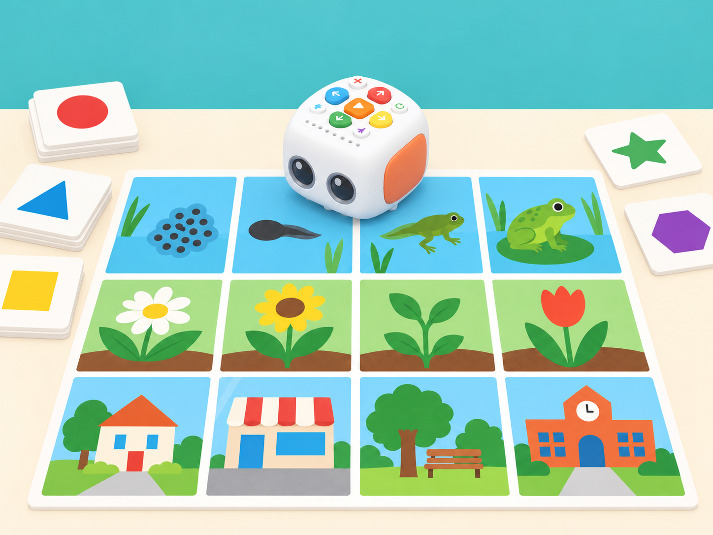
🌱 Situació, repte i intenció
alterneu els rols de programar, observar i contar el resultat, i ajusteu l’objectiu per facilitar una experiència d’èxit. Abans de cada repte, carregueu Tale-Bot, comproveu la versió del robot i prepareu una taula o terra nets i plans. Els mapes i materials d’aquesta adaptació són propis; useu adhesius OID o funcions de l’Activity Box només quan el centre en tinga i els haja verificat.
🎯 Aprenentatges i vocabulari
- Fer servir una ruta per orientar una exploració de ciència, llenguatge, matemàtiques o art.
- Ordenar instruccions i anticipar què observarà el grup en cada parada.
- Comparar observació directa, representació i inferència en activitats de l’entorn.
- Crear relats i recomptes amb mapes propis sense registrar dades personals ni afirmar deteccions del robot.
🧰 Materials i preparació
Robot de la dotació, mapa en paper, targetes pròpies, fitxes planes i, opcionalment, suport multifunció i retoladors compatibles que s’hagen comprovat físicament. La proposta oficial empra els mapes i recursos de l’Activity Box; ací s’ofereix una alternativa imprimible i manipulable, i no es pressuposen avisos de veu ni mapes interactius. Les activitats d’imant i dibuix s’adapten segons la seguretat i els accessoris disponibles. El robot no identifica objectes, aliments, colors ni magnetisme per si mateix.
📅 Seqüència didàctica
Els cinc sentits
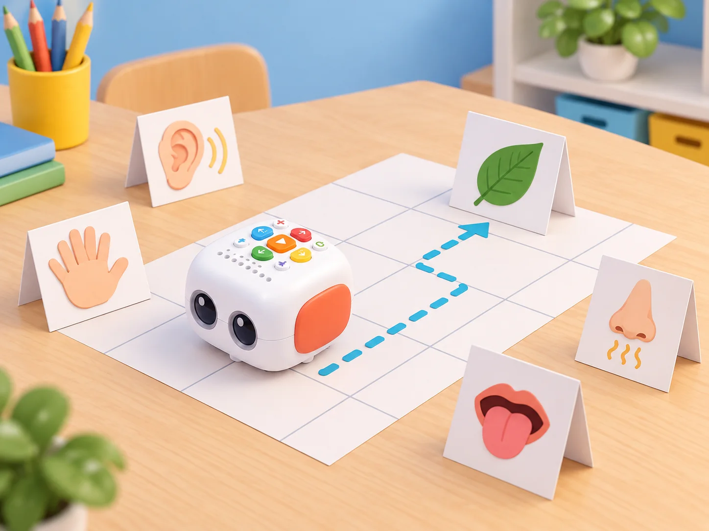
Fase 1 · Activem i prediem
Trieu una targeta sensorial i relacioneu-la amb una imatge o un objecte del mapa. Expliqueu quin indici us ha fet triar-lo.
Fase 2 · Explorem i construïm
Dibuixeu dos recorreguts possibles fins a la mateixa destinació i representeu les ordres amb targetes abans de programar Tale-Bot.
Fase 3 · Expliquem i registrem
Compareu quantes ordres necessita cada ruta i marqueu-les amb colors diferents. Anoteu si les dues arriben a la mateixa casella.
Fase 4 · Apliquem i millorem
Programeu una de les rutes i comproveu-la sobre el mapa. Si no arriba a la destinació, localitzeu la primera ordre que cal canviar.
Fase 5 · Comprovem i reflexionem
Comptem al mercat
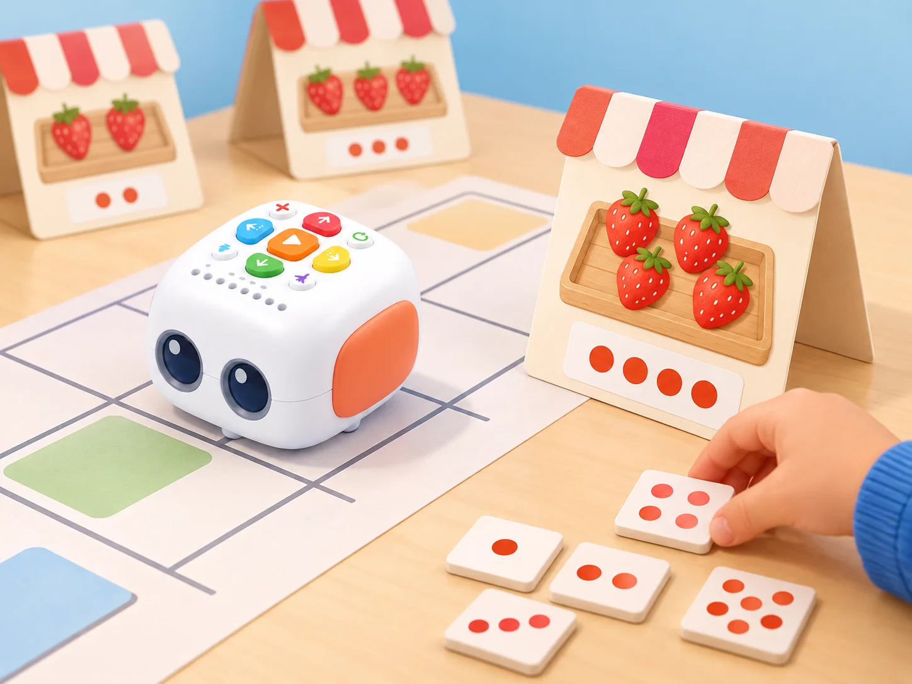
Fase 1 · Activem i prediem
Poseu a les caselles conjunts de maduixes d’1 a 7. Trieu una targeta numèrica i predigueu quina casella representa.
Fase 2 · Explorem i construïm
Planifiqueu la ruta fins a la casella amb targetes de direcció, indicant el punt d’inici i l’orientació del robot.
Fase 3 · Expliquem i registrem
Una parella programa Tale-Bot i l’altra comprova el recompte, les ordres i la destinació. Anoteu on coincideixen o divergeixen.
Fase 4 · Apliquem i millorem
Si el robot no arriba, decidiu si l’error és de recompte, orientació o ordre; canvieu una instrucció i repetiu el trajecte.
Fase 5 · Comprovem i reflexionem
El monstre de les formes
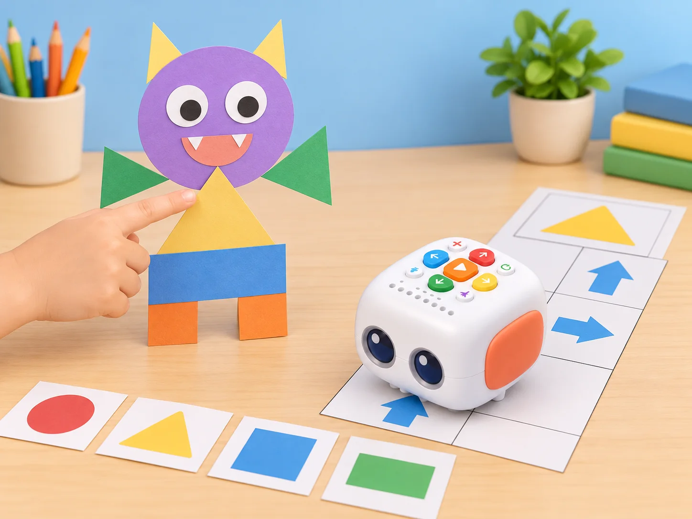
Fase 1 · Activem i prediem
Prepareu targetes de cercle, triangle, quadrat i rectangle, i quatre destinacions amb aliments dibuixats. Traieu una forma i predigueu quina propietat permetrà reconéixer-la.
Fase 2 · Explorem i construïm
Descriviu costats, vèrtexs o línia corba i trieu la destinació acordada. Planifiqueu les ordres fins a la casella.
Fase 3 · Expliquem i registrem
Registreu la forma, la propietat i el menjar triat. Una persona observadora verifica la destinació abans d’acceptar-la.
Fase 4 · Apliquem i millorem
Programeu la ruta. Si no és correcta, expliqueu i depureu el programa sense donar la resposta de seguida.
Fase 5 · Comprovem i reflexionem
Fruites i verdures de colors
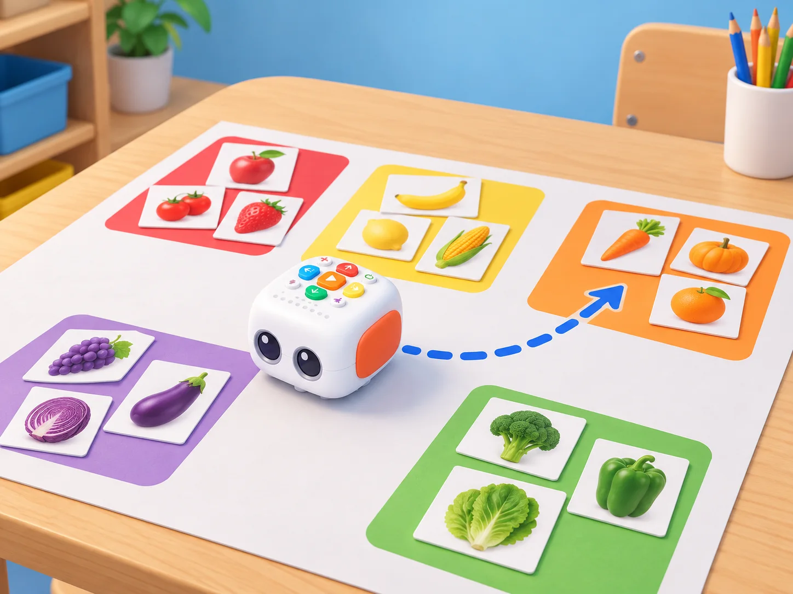
Fase 1 · Activem i prediem
Distribuïu imatges de productes grocs, morats, taronges, rojos i verds. Cada equip rep un color i prediu quines caselles podrien correspondre-hi.
Fase 2 · Explorem i construïm
Trieu un producte que represente el color i guieu Tale-Bot fins a la casella amb una seqüència d’ordres planificada.
Fase 3 · Expliquem i registrem
Justifiqueu la tria a partir de la imatge i anoteu quines altres respostes són possibles si el producte té més d’un color.
Fase 4 · Apliquem i millorem
Executeu la ruta i comproveu que arriba a la casella. Si una altra parella ha triat un producte diferent amb el mateix color, compareu les justificacions.
Fase 5 · Comprovem i reflexionem
El cicle de vida de la granota
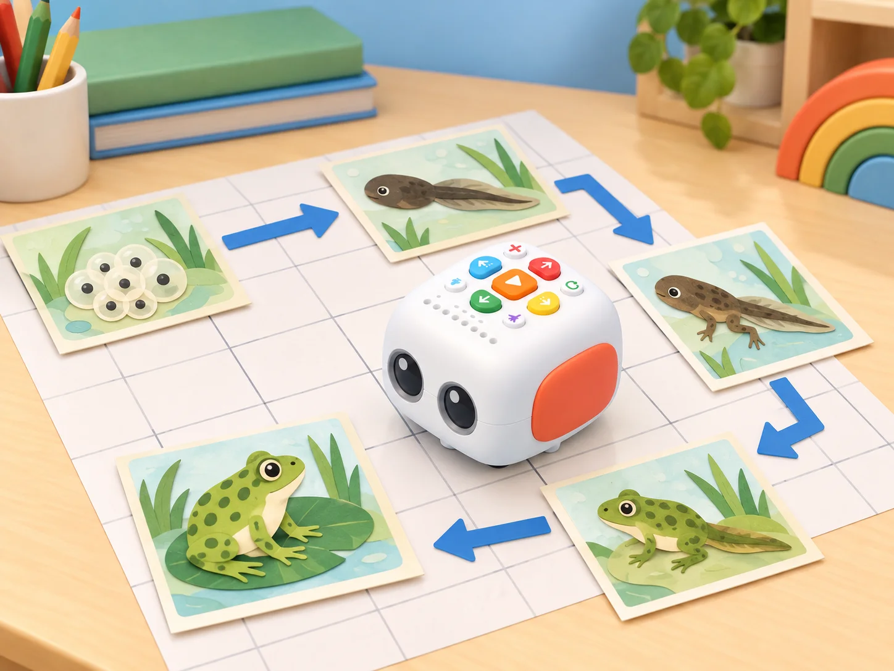
Fase 1 · Activem i prediem
Observeu les cinc targetes del cicle i predigueu quina etapa va abans i després de la que trieu.
Fase 2 · Explorem i construïm
Ordeneu ous, capgrossos, capgrossos amb potes posteriors, granota jove amb cua i granota adulta. Representeu la seqüència primer amb targetes.
Fase 3 · Expliquem i registrem
Una persona llig les etapes, una altra prepara les ordres i una tercera comprova cada parada. Anoteu la seqüència acordada.
Fase 4 · Apliquem i millorem
Programeu Tale-Bot perquè visite les imatges en ordre. Si una parada queda fora de seqüència, localitzeu la primera ordre que cal revisar.
Fase 5 · Comprovem i reflexionem
El cicle del gira-sol
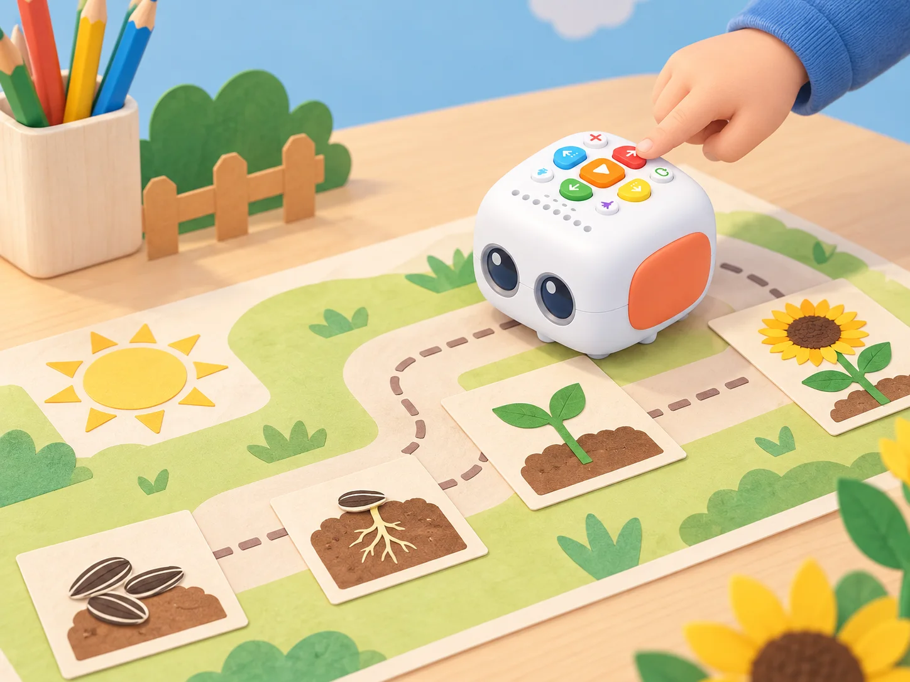
Fase 1 · Activem i prediem
Observeu les sis imatges del gira-sol i predigueu quin canvi es produeix entre dues etapes consecutives.
Fase 2 · Explorem i construïm
Exploreu el mapa i les targetes informatives; ordeneu llavor, arrel, plàntula, planta menuda, planta jove i planta adulta.
Fase 3 · Expliquem i registrem
Trieu un punt d’inici i anoteu les sis parades en la seqüència abans de programar.
Fase 4 · Apliquem i millorem
Programeu Tale-Bot perquè visite les imatges en ordre. Feu una segona ronda i expliqueu què necessita la planta en una etapa triada.
Fase 5 · Comprovem i reflexionem
Parc musical I
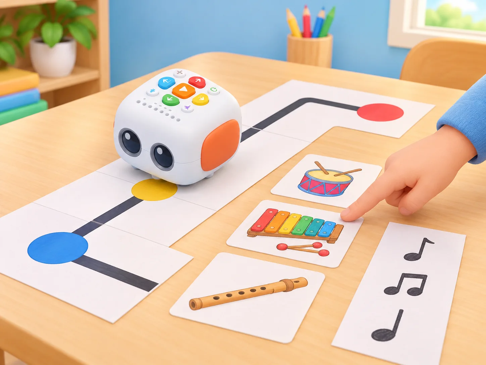
Fase 1 · Activem i prediem
Canteu
Are You Sleeping
—o una melodia d’aula equivalent si no es treballa aquesta cançó— i predigueu quin instrument del mapa podria acompanyar-la.
Fase 2 · Explorem i construïm
Llegiu la targeta de notació i manteniu les notes en l’ordre indicat. Trieu al mapa un instrument i representeu el recorregut amb targetes de direcció.
Fase 3 · Expliquem i registrem
Anoteu l’ordre de les notes i les ordres de la ruta. Assigneu torns perquè totes les persones puguen participar en la lectura, programació o interpretació.
Fase 4 · Apliquem i millorem
Programeu el trajecte fins a l’instrument i interpreteu la melodia amb veu o instruments d’aula. Reviseu l’ordre musical si la interpretació no coincideix amb la targeta.
Fase 5 · Comprovem i reflexionem
Parc musical II
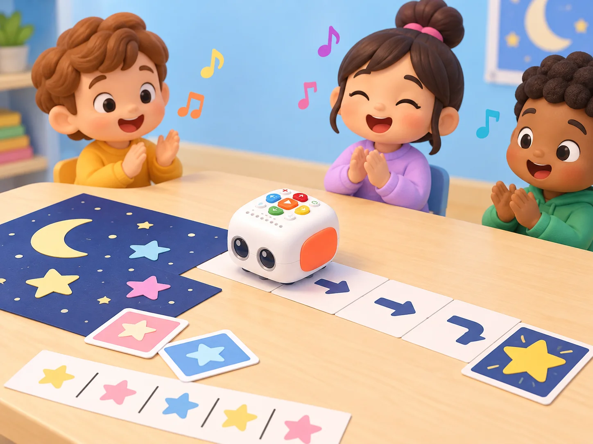
Fase 1 · Activem i prediem
Canteu
Twinkle, Twinkle, Little Star
i predigueu quin instrument del mapa podria acompanyar-la. Seguiu la targeta de notes sense necessitat de reproduir la cançó amb el robot.
Fase 2 · Explorem i construïm
Manteniu les notes en l’ordre indicat, trieu una destinació i traceu la ruta amb targetes de direcció.
Fase 3 · Expliquem i registrem
Anoteu la seqüència de notes i les ordres del trajecte; compareu-les amb les de la primera melodia.
Fase 4 · Apliquem i millorem
Creeu o busqueu una segona targeta musical, interpreteu-la i repetiu el recorregut. Reviseu la seqüència o les ordres si les notes o el trajecte no coincideixen amb el pla.
Fase 5 · Comprovem i reflexionem
Viatge pel sistema solar
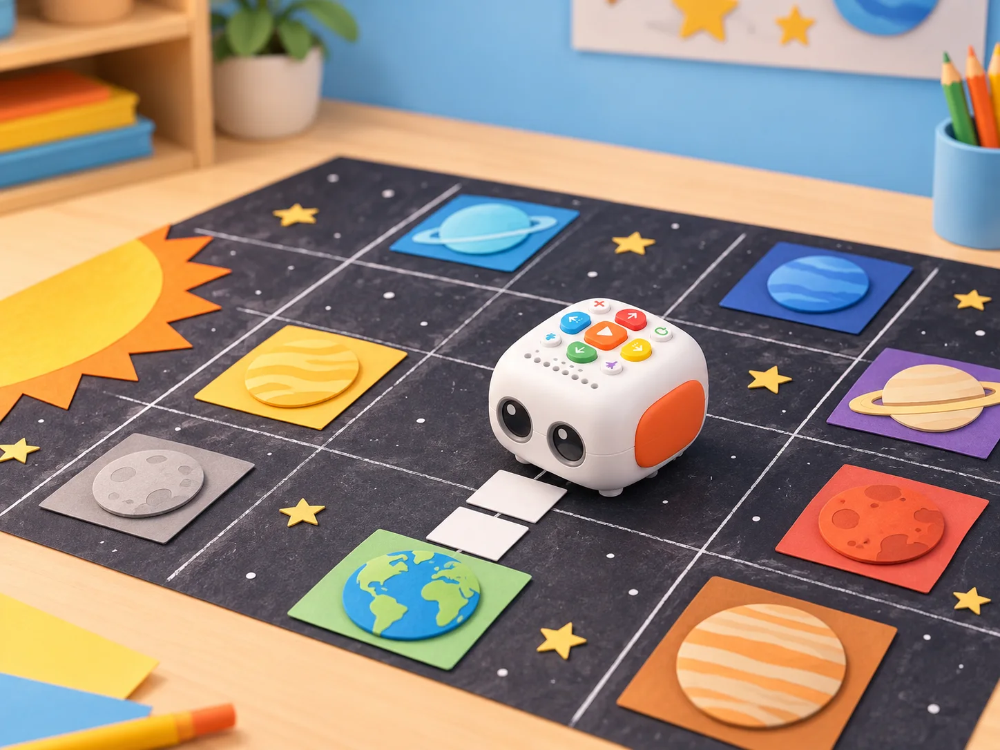
Fase 1 · Activem i prediem
Prepareu les huit targetes de planetes en un mapa propi. Trieu un punt d’inici i predigueu quina ruta permetrà arribar al planeta objectiu.
Fase 2 · Explorem i construïm
Col·loqueu les targetes i seleccioneu una destinació. Una pregunta científica —com quin planeta és més gran— pot donar una destinació extra.
Fase 3 · Expliquem i registrem
Representeu les ordres de la ruta i marqueu les caselles que cal evitar. Expliqueu com heu triat el camí.
Fase 4 · Apliquem i millorem
Programeu Tale-Bot fins al planeta objectiu sense entrar en les caselles dels altres planetes. Si s’hi desvia, localitzeu la primera instrucció incorrecta.
Fase 5 · Comprovem i reflexionem
Recollida magnètica, amb adaptació segura
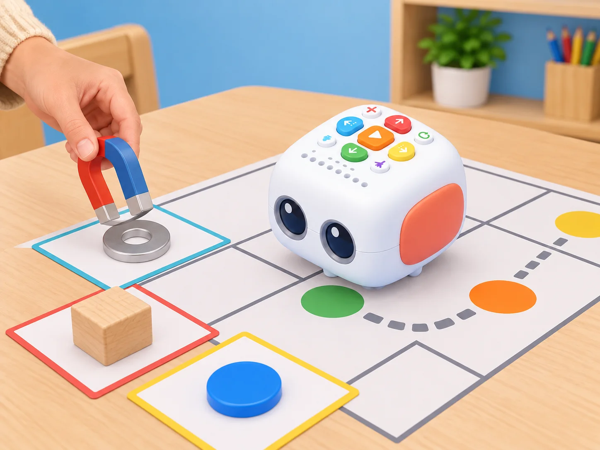
Fase 1 · Activem i prediem
Observeu objectes grans i segurs i predigueu quins podrien ser atrets per un imant. Expliqueu quin material o característica heu usat com a pista.
Fase 2 · Explorem i construïm
Col·loqueu els objectes en caselles diferents i planifiqueu una ruta de Tale-Bot que visite cada mostra. L’imant no s’arrossega amb el robot.
Fase 3 · Expliquem i registrem
Anoteu objecte, predicció i ruta. Una persona adulta fa la prova magnètica a mà amb peces grans i segures i registra el resultat observat.
Fase 4 · Apliquem i millorem
Compareu prediccions i resultats i reviseu les classificacions amb evidències. Comproveu que la ruta visita totes les mostres sense tocar-les ni enganxar cap accessori al robot.
Fase 5 · Comprovem i reflexionem
Paranys i tresors
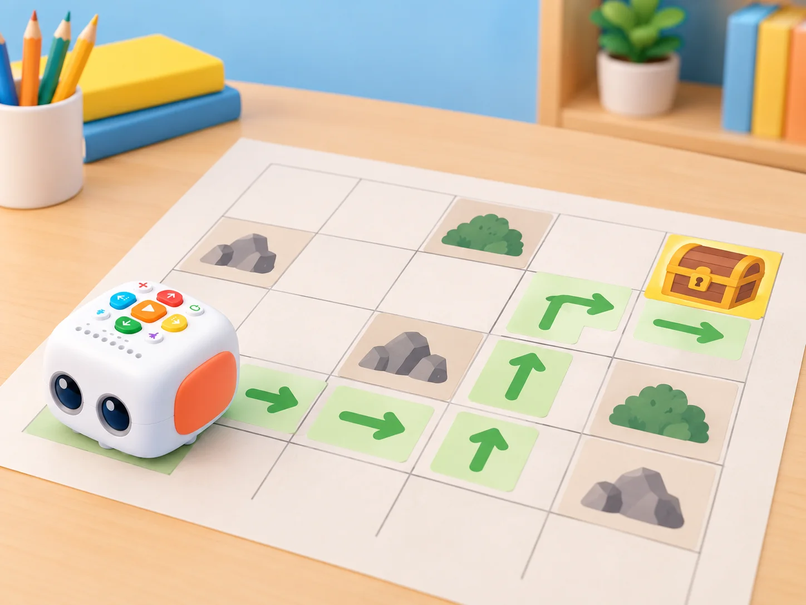
Fase 1 · Activem i prediem
Col·loqueu adhesius propis de paranys i tresors en la quadrícula. Trieu una casella d’inici i predigueu un camí segur fins a un tresor.
Fase 2 · Explorem i construïm
Traceu el camí amb el dit i després representeu-lo amb targetes de direcció, evitant les caselles tancades.
Fase 3 · Expliquem i registrem
Anoteu les ordres i marqueu les caselles per on ha de passar Tale-Bot. Una altra parella comprova el pla abans d’executar-lo.
Fase 4 · Apliquem i millorem
Programeu la ruta. Si falla, identifiqueu la primera ordre que la desvia i canvieu-la abans de repetir.
Fase 5 · Comprovem i reflexionem
Persones que fan servei al barri
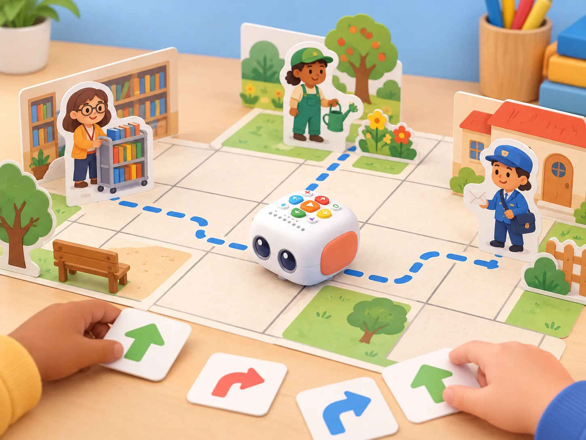
Fase 1 · Activem i prediem
Creeu targetes pròpies de serveis del barri: persona bibliotecària i carretó de llibres, jardinera i regadora, o personal de correus i bossa de cartes. Parleu del servei i relacioneu-lo amb l’eina; no deduïu ocupacions per l’aparença ni les assigneu per gènere.
Fase 2 · Explorem i construïm
Afegiu adhesius de «zona tancada» com a adaptació local dels paranys. Trieu una parella persona–eina, marqueu l’inici i la destinació i planifiqueu una ruta que no travesse les zones tancades.
Fase 3 · Expliquem i registrem
Representeu les ordres amb targetes, comproveu-les i anoteu per què l’eina correspon al servei triat.
Fase 4 · Apliquem i millorem
Programeu Tale-Bot i compareu el recorregut amb la predicció. Si entra en una casella tancada o no arriba, localitzeu la primera ordre que cal canviar i repetiu; després feu una segona missió canviant els rols.
Fase 5 · Comprovem i reflexionem
Del més lent al més ràpid (2 sessions, 2 hores)
Fase 1 · Activem i prediem
Sessió 1 — comparem el model. Observeu les tres fitxes de la targeta: tractor, camió de bombers i tren maglev. Abans de classificar-les, llegiu el context que acompanya cada vehicle; la velocitat depén del model, el recorregut i les condicions, així que no deduïu un valor universal només pel dibuix. Per a fer la comparació matemàtica, acordeu una simulació: en el mateix interval de temps, el tractor avança una casella, el camió dues i el tren tres.
Aquests nombres són dades fictícies del joc, no velocitats reals.
Fase 2 · Explorem i construïm
Representem les tres distàncies amb fitxes de colors damunt de tres tires iguals de temps. Compteu caselles i ordeneu els vehicles de la menor a la major distància recorreguda en el mateix interval. Després, en una quadrícula nova, situeu les fitxes dels tres vehicles i una destinació —l’estació— en una ruta pròpia que connecte l’horta, el servei de bombers i el tren. Comenceu al tractor i traceu amb llapis un itinerari continu fins a la destinació.
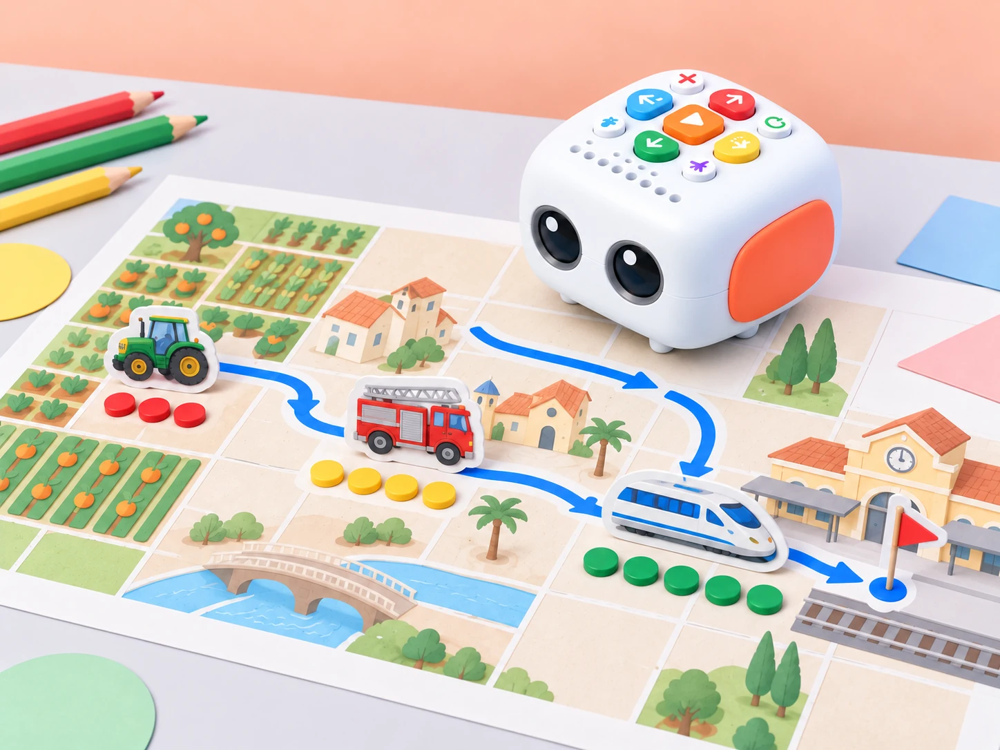
Fase 3 · Expliquem i registrem
Sessió 2 — preparem un únic recorregut. Registreu en una taula la distància simulada de cada vehicle en un interval, l’ordre resultant i la destinació final. Una parella transforma el traç en targetes de comandament; l’altra comprova el punt d’inici, l’orientació, cada gir i el nombre de caselles fins a la meta. Feu una simulació manual amb una fitxa de robòtica abans de tocar el robot.
Fase 4 · Apliquem i millorem
Introduïu tota la seqüència en Tale-Bot i executeu-la una vegada, com proposa el repte. Compareu la posició final amb la destinació i localitzeu en el mapa la primera desviació si no coincideixen. Reviseu en paper quin comandament caldria canviar; una segona execució és una extensió opcional i s’anota com a nova prova, no com si fora la primera.
Fase 5 · Comprovem i reflexionem
Taller d’artista I
Fase 1 · Activem i prediem
Observeu el suport multifunció, els punts on es pot subjectar un retolador i la distància entre la punta i el cos del robot. En un full, dibuixeu una forma tancada —com un quadrat— i marqueu amb fletxes quin tram correspon a cada ordre. Predigueu què passarà si una ordre de gir o d’avanç es repeteix una vegada més.
Fase 2 · Explorem i construïm
Comproveu físicament que el kit del centre inclou el suport de dibuix i que el retolador queda subjecte sense tocar les rodes. Fixeu un full gran perquè no llisque i feu una prova d’un sol tram amb el robot aturat abans d’iniciar el programa. Si el centre té una versió diferent del suport o no el té, no forceu peces: prepareu una quadrícula i representeu la mateixa seqüència amb una fitxa.
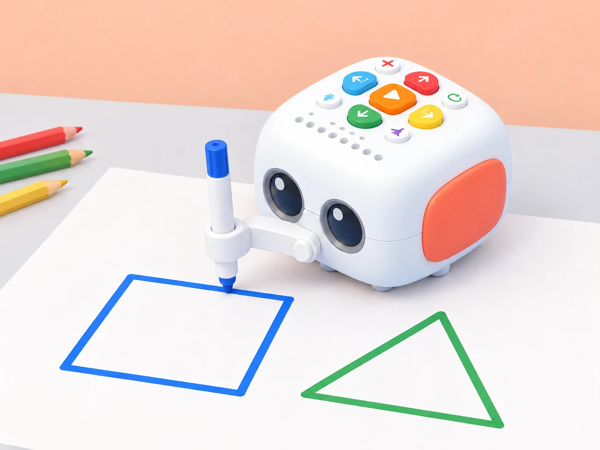
Fase 3 · Expliquem i registrem
Planifiqueu una forma amb una seqüència curta de moviments i girs. Abans de prémer Play, feu que una parella represente les ordres sobre la quadrícula amb una fitxa; l’altra comprova orientació, punt d’inici i nombre de passos. Registreu el programa previst i el nombre d’ordres de cada costat.
Fase 4 · Apliquem i millorem
Executeu el traç amb un sol retolador. Compareu el dibuix amb la predicció: la forma tanca?, els costats s’assemblen?, on s’ha desviat el marcador? Canvieu només una decisió —un pas, un gir o l’orientació inicial— i repetiu sobre un full nou. Si la línia no tanca, conserveu el primer resultat i marqueu el punt on cal revisar la seqüència.
Fase 5 · Comprovem i reflexionem
Taller d’artista II
Fase 1 · Activem i prediem
Recupereu la forma i el programa del taller anterior. En parelles, trieu dues formes que puguen combinar-se per representar un espai del barri —per exemple, un jardí amb un camí o una plaça amb un estany— i decidiu quina es dibuixarà primer. Predigueu què veurà el full si s’hi col·loquen dos retoladors i les línies coincideixen o se separen.
Fase 2 · Explorem i construïm
Comproveu si el suport disponible permet fixar dos retoladors alhora i si les dues puntes poden tocar el paper sense que els cossos xoquen. Feu una prova curta amb el robot estacionari i retireu la segona punta si el muntatge fa força o s’encalla. Assigneu rols de disseny, programació, comprovació del suport i registre; prepareu també una alternativa amb una forma per retolador.
Fase 3 · Expliquem i registrem
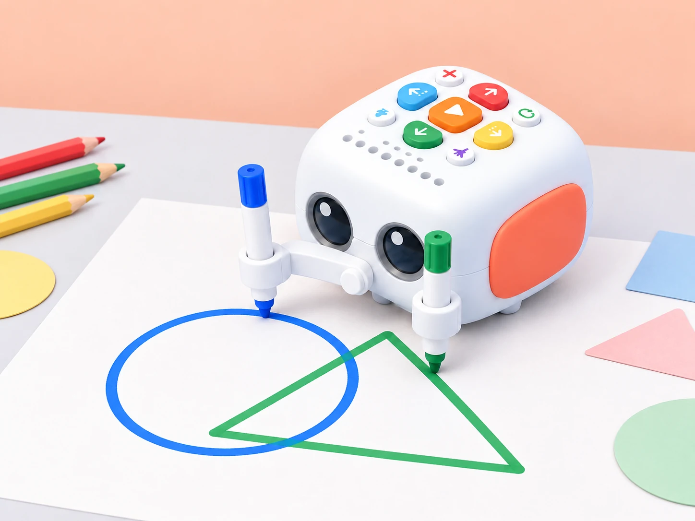
Escriviu i dibuixeu el pla abans de programar: forma, punt inicial, orientació, color i ordres associades. Indiqueu si els dos colors apareixen al mateix temps o en execucions separades, segons el suport real. Després de cada traç, l’alumnat pot acolorir les formes a mà i afegir detalls que expliquen una escena; distingiu clarament el que ha fet el robot del que s’ha completat manualment.
Fase 4 · Apliquem i millorem
Executeu primer cada forma per separat i després, si el muntatge és estable, proveu la composició amb dos retoladors. Compareu les dues versions i decidiu si el solapament ajuda a comunicar l’escena. Si el suport no admet dos retoladors o el traç no és consistent, feu les formes en dues passades o representeu la ruta en paper; no pressioneu el robot ni l’accessori per a forçar el contacte.
Fase 5 · Comprovem i reflexionem
En grup, acoloriu i amplieu els traços amb materials de papereria. Presenteu una decisió de composició que hàgeu revisat després de veure el resultat i demaneu a una altra parella què interpreta de la imatge.
Si la configuració de dos retoladors no és compatible amb el model de suport del centre, l’equip documenta la comprovació fallida i usa la variant de dues passades.
🧪 Evidències i avaluació
Mapa anotat, classificacions, prediccions, seqüències de comandaments, una ruta depurada i relat oral o visual. Es valora argumentar l’ordre, comprovar-lo i revisar una idea després d’una prova, no encertar a la primera.
♿ Participació, accessibilitat i seguretat
Oferiu el mapa en format gran, amb inici ben contrastat i pictogrames a més de colors. L’alumnat pot planificar amb targetes, assenyalar o dictar les ordres abans que una altra persona les introduïsca al robot. Reduïu el nombre de parades si cal i feu les proves sobre una taula estable, sense obstacles que puguen encallar les rodes.
🔗 Referents i adaptació
Adaptació de les 15 activitats oficials de categoria B —My Five Senses, Counting Game, Shape Monster, Fruits & Veggies Challenge, Frog Life Cycle, Sunflower Life Cycle, Music Park I/II, Trouble Traps, Solar System, Magnetic Collector, Community Helpers, Slowest to Fastest i Tale-Bot is an Artist I/II— de les Activity Cards per a Tale-Bot Pro. El marc oficial confirma l’estructura 10/15/7/10 (Lesson 4.4: Activity Cards);
el fabricant també ofereix una mostra en la pàgina de descàrregues. En B-14 i B-15, la proposta adapta l’exploració del suport de dibuix, els traços amb un retolador i dos, i l’ampliació artística en grup; el funcionament del suport es comprova amb el model real del centre. Les tasques, mapes i dades són propis.